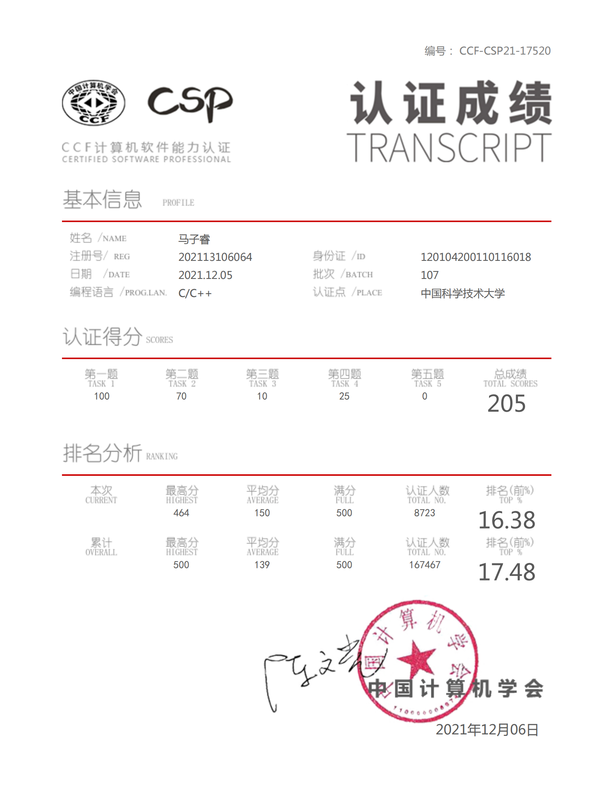

个人信息
姓名：马子睿
性别：男
生日：2001年10月11日
政治面貌：共青团员
学业情况：本科在读
就读院校：中国科学技术大学
专业：计算机科学与技术
联系电话：18649112114
性别：男
生日：2001年10月11日
政治面貌：共青团员
学业情况：本科在读
就读院校：中国科学技术大学
专业：计算机科学与技术
联系电话：18649112114
个人简历 / personal resume
马子睿，中国科学技术大学计算机科学与技术学院2020级在读本科生。现任中国科大2020级计算机科学与技术学院本科1班班长、副团支书，中国科大校学生合唱团团长。2021年至今从事计算机体系结构方向的研究工作。
在专业修习方面，已完成修读计算机科学与技术专业大多数专业课，包括计算机组成原理、操作系统原理与设计、数据结构等，在2021年CSP全国大学生计算机能力水平等级认证中获全国前15.68%，并在2022年获得全国大学生系统能力大赛“龙芯杯”重要奖项。
在社团活动方面，已在校五星级社团——校学生合唱团担任副团长一年，为《风的游吟》《山高水长》等专场音乐会的宣传工作做出重要贡献，并于2022-2023学年担任校学生合唱团团长。
在专业修习方面，已完成修读计算机科学与技术专业大多数专业课，包括计算机组成原理、操作系统原理与设计、数据结构等，在2021年CSP全国大学生计算机能力水平等级认证中获全国前15.68%，并在2022年获得全国大学生系统能力大赛“龙芯杯”重要奖项。
在社团活动方面，已在校五星级社团——校学生合唱团担任副团长一年，为《风的游吟》《山高水长》等专场音乐会的宣传工作做出重要贡献，并于2022-2023学年担任校学生合唱团团长。
获奖和荣誉 / prize and honor
- 2022第六届“龙芯杯”全国大学生CPU设计大赛Loongarch挑战赛道二等奖（第二名）

- 2021第27次CCF CSP软件能力认证205分 